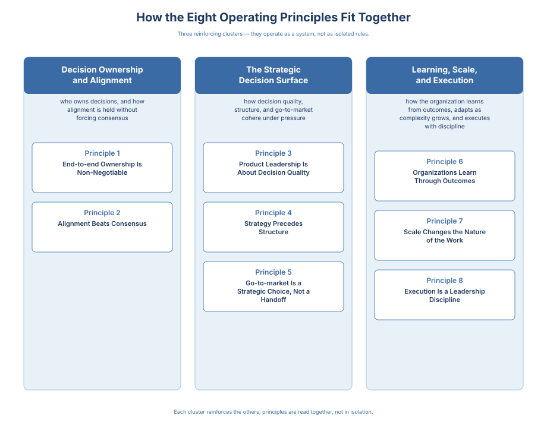

Vision to Value · 10 / 16
Chapter 8: The Eight Operating Principles
The principles are introduced briefly in Chapter 1 and then expanded inline where each chapter relies on them. This chapter revisits all eight together, in light of the decision system the preceding chapters have built.
This chapter articulates the principles senior product leaders rely on to make consistent, high-quality decisions at scale. These are not tactics, frameworks, or checklists. They are operating principles: statements that protect decision quality, enable repeatability across leaders, and preserve decisions under pressure.
A note on "world-class." The Introduction defines the term once and does not redefine it elsewhere. This chapter shows how the eight principles produce the decision behavior the framing describes.
Operating principles are only real when practiced. In world-class organizations they show up in everyday behavior: how leaders frame decisions, what they tolerate, what they escalate, what they repeat until normal. The principles here are designed to be teachable, modeled by leaders, and reinforced through routines. For experienced product leaders, this chapter sharpens judgment rather than teaching fundamentals; the value is in how the ideas are named, prioritized, and applied under real organizational pressure.
How the Eight Principles Fit Together
The eight principles in this chapter fall into three reinforcing clusters:
Decision Ownership and Alignment
Principles 1, 2 — who owns decisions, and how alignment is held without forcing consensus.
The Strategic Decision Surface
Principles 3, 4, 5 — how decision quality, structure, and go-to-market cohere as the operating decisions a product leader makes under pressure.
Learning, Scale, and Execution
Principles 6, 7, 8 — how the organization learns from outcomes, adapts as complexity grows, and executes with discipline.

The principles are listed individually, but they operate as a system. Launch readiness is the recurring through-line: one decision viewed through five lenses - ownership (Ch.1), principle violated (Ch.2), commitment hardening (Ch.3), interface charter (Ch.4), and scaling failure cost (Ch.5). Each principle is remembered through the decision it protects, not as a slogan.
The three clusters are how the principles organize; the product leadership team is how they scale. At scale, consistency does not come from one leader's excellence. It comes from the Product Leadership Team (PLT): the directors and senior leaders who turn each cluster into a working mechanism. They translate the ownership-and-alignment cluster into named decision rights, the strategic-decision-surface cluster into the forums where tradeoffs resolve, and the execution-scale-learning cluster into the outcome reviews that close the loop. When that team is effective, decision quality becomes repeatable and durable. Teams then move faster without chaos, because the organization shares one operating logic: what 'good' looks like, what must be true before committing, and what is non-negotiable.
Principle 1: End-to-end Ownership Is Non-Negotiable
Definition Product organizations create value when ownership spans the full lifecycle: from problem framing through delivery and outcomes. Fragmented ownership produces local optimization, high decision latency, and diluted accountability.
Why it matters Senior leaders should treat end-to-end ownership as a design constraint. Where it is compromised, execution speed and learning quality suffer regardless of team talent.
Failure mode "We delivered the roadmap" becomes a substitute for "we improved outcomes."
Signal A team ships a feature and considers it "done," but adoption stalls and no one owns onboarding, pricing implications, enablement, or post-launch iteration. Delivery happened; impact did not.
Signature decision (where this breaks): Whether a launch is "done" or requires post-launch iteration commitments tied to adoption outcomes. Cost of the break: adoption shortfall translates into stranded ARR and unabsorbed CS load.
Leader behaviors that reinforce it
- Assign a single accountable owner for outcomes, not just delivery
- Run post-launch reviews that connect decisions to results
- Make cross-functional ownership explicit and enforce it
Tradeoff End-to-end ownership increases cognitive load on leaders and teams. The real tradeoff is coordination overhead now versus the compounding cost of local optimization later: discount leakage, support overload, and churn from functions optimizing against their own scorecards. The bet is that coordination overhead is visible and budgetable, while local-optimization cost is invisible until it shows up in the P&L. Cognitive load is a design variable, not a side effect: scope per PM, stakeholder count per decision, and concurrent bets per team are actively designed. Demanding end-to-end ownership at team level without shaping these produces burnout-by-alignment.
In practice: A team launches a feature and celebrates "done," but adoption stalls. Post-mortems blame marketing or timing. The actual gap: no one owned a 4-week post-launch iteration plan tied to activation metrics. "Done" was a feeling, not a decision with criteria. A product passes through three states, and end-to-end ownership requires the same leadership system hold all three: shipped (code in production), adopted (customers using it at expected depth and pace), and valued (customers reached the outcome the commitment promised). Conflating these is the most common failure mode; naming them separately is the first move that makes end-to-end real.
Emotional cost End-to-end ownership means you stop being able to say "that's marketing's KPI" or "it's a separate CS challenge" or "sales are not pushing the GTM hard enough," about an outcome you committed to. When adoption misses, the other functions have a direction they can point. You do not. You stand in front of a number that is smaller than the number YOU promised, and the room waits to see which way you turn. Most leaders learn, the first time they stand there, that the authority they wanted and the exposure they did not want are inseparable.
Principle 2: Alignment Beats Consensus
Definition High-performing product organizations optimize for alignment, not universal agreement. Alignment means shared understanding of direction, priorities, and success criteria.
Why it matters Seeking consensus on every decision slows execution and masks accountability. Alignment enables speed without chaos.
Alignment is hard in practice because it threatens identity, status, and perceived control. Leaders should expect resistance, because clarity removes hiding places. Scaling a decision system requires emotional discipline alongside structural design.
Failure mode Broad agreement without explicit decision ownership results in stalled execution.
Signal A leadership team runs a strategy review where everyone is heard, then one accountable owner makes the call. The team leaves with a single direction and clear next steps-even if not everyone would have chosen it.
Signature decision (where this breaks): When to stop seeking agreement and make a directional call with explicit tradeoffs. Cost of the break: unresolved tradeoffs leak into quarterly planning as commitment drift and duplicated scope.
Leader behaviors that reinforce it
- Explicitly separate input from ownership
- Clarify what must be aligned (direction, constraints, success criteria)
- Normalize "disagree and commit" after decisions are made
Emotional cost Every no you make in alignment is explained once and defended many times. The peer you said no to in Q1 will ask again in Q2, and again at the all-hands in Q3, in the window before the outcome has materialized to settle the argument for you. Some of them will ask you to defend the direction to their own customers because they will not. Some of them will defend it badly on purpose. The cost of alignment is not the no itself. It is the months of carrying the no in rooms where consensus would have ended the conversation.
Chief People Officer callout. Principle 2 reads clean at the product-organization altitude the chapter operates at, but it is worth naming the executive interface the principle depends on: the CPO-Chief-People-Officer interface Chapter 6 specifies. Without that interface running on the cadence Chapter 6 describes, Principle 2 becomes an aspiration the product organization carries alone, which reproduces the failure mode the principle names. Talent design is a joint decision with the Chief People Officer, or it is talent administration absorbed into HR after the decision is functionally made. Chapter 6 describes the interface; Principle 2 describes what the interface is for.
Principle 3: Product Leadership Is About Decision Quality
The meeting was about the pricing of the new package we've been developing in the last few months. Two weeks before launch. I was the Director in charge of it.
I had built the plan. I had briefed the sales team on positioning. I had sat through six weeks of CS enablement drafts. The one thing I had not resolved, and knew I had not resolved, was that the packaging and the value proposition were not completely aligned. The tiers split the story. Sales would have to pick which part to lead with. CS would spend the next two quarters cleaning up the positioning mismatch with customers who had heard different pitches from different sellers.
I knew it when the slide came up. I had known it for a week. I sat with the deck open the night before and ran the sales call in my head and heard the confusion.
In the room the CMO walked through the pricing. My GM had already confirmed the launch is on track in the QBR last week. A QBR deck I wrote.
I had about ninety seconds to say the thing.
What I said was a question about implementation of the tier cutoffs. A clean, technical question. Easy to answer. The room answered it and moved on.
We shipped on the date.
The launch missed its activation number by a wide margin. The postmortem named enablement gaps, sales readiness, feature timing, early-cycle churn.
The real cause was the ninety seconds in that room, and the specific decision I made in those ninety seconds to ask a technical question instead of the positioning question I had prepared.
What I remember most is how little it cost to be easy to work with in that meeting, and how long the cost of it has taken to pay out since.
Definition The core output of product leadership is not roadmaps or plans; it is decisions: what to pursue, what to defer, and what to stop.
Why it matters As organizations scale, decision quality, not velocity alone, becomes the primary limiter of impact. Leaders must design systems that surface the right information at the right time and clearly define who decides.
Leader stance Own the what and why; empower the how.
Leaders set intent and success criteria, then create space for teams closest to the work to determine implementation. This prevents micromanagement and improves throughput without sacrificing coherence.
Failure mode Endless debate that feels productive but avoids ownership.
Signal Two teams argue about implementation details for weeks. A leader resets the conversation by making the decision explicit: what outcome must be achieved, by when, and why it matters. Once the decision is framed, teams converge quickly.
Signature decision (where this breaks): Which 1-3 decisions leadership must make this week (vs. reviewing status/roadmaps). Cost of the break: escalation-by-default consumes senior leadership attention that the organization cannot replace at the margin.
Leader behaviors that reinforce it
- Define decision types and decision owners so not everything escalates
- Use clear success criteria and constraints to guide teams
- Record major decisions and revisit them based on outcomes
In practice: A weekly leadership meeting becomes a status update ritual. The shift: each meeting now opens with "What are the 1-3 decisions we must make this week?" Each decision has an owner, constraints, and a "good enough evidence" threshold. Debates shorten because framing is explicit. Cycle time improves because escalation becomes intentional, not reflexive.
Principle 4: Strategy Precedes Structure
Definition Structure is an execution tool, not a starting point. Roles, teams, and reporting lines must reflect strategic intent: what the organization is trying to win, for whom, and why.
Why it matters When structure leads strategy, organizations become efficient at delivering the wrong things.
Failure mode A company reorganizes to "fix execution" without resolving strategic ambiguity. Morale briefly improves, then priorities drift again. The reason this failure mode is so durable is that reorganizing looks like leadership and naming strategic ambiguity does not. A reorg produces visible motion: a new org chart, new titles, a town hall the CEO thanks you for running. Admitting that the organization cannot name what it is trying to win produces none of that, and it puts the admission on the leader who raises it. The leader who raises it becomes the person who slowed things down to ask a question the room had agreed to stop asking. That is why the failure mode repeats: the alternative is structurally less visible and personally more expensive than the reorg that does not work.
Signal A company reorganizes into "platform teams" because it sounds modern, but cannot articulate the strategic advantage the platform is meant to create. Six months later, priorities are still unclear-only now the org chart makes change harder.
Signature decision (where this breaks): Whether to redesign structure before clarifying strategic choices and platform intent. Cost of the break: a reorg without strategic anchor amortizes 6-12 months of execution drag before the structure earns its payback.
Leader behaviors that reinforce it
- Require a written strategic intent before changing structure
- Design teams around the decisions they must own
- Treat reorganizations as high-cost moves that require clear payback
Principle 5: Go-to-market Is a Strategic Choice, Not a Handoff
Definition Go-to-market decisions are inseparable from product strategy. Pricing, positioning, sales motion, and adoption dynamics shape what should be built and how success is measured.
Go-to-market is not one decision; it is a set of decisions with different owners. Positioning and messaging are owned by Product Marketing. Pricing and packaging are a shared decision right between Product, Product Marketing, and Finance, with Product accountable for pricing intent and Finance accountable for the margin floor. Channel and demand generation are owned by Marketing. Sales enablement, plays, and battlecards are co-decided by Product Marketing and Sales, with PMM accountable for the artifacts and Sales accountable for field adoption. Field execution is owned by Sales. Treating "GTM" as a single undifferentiated handoff is itself a failure mode - the word hides the owners the decisions actually belong to.
Why it matters Treating Go-to-market as a downstream activity disconnects product decisions from business outcomes.
Signal A team ships a technically strong capability that is hard to explain, hard to demo, and unclear to price. Adoption is weak not because the feature is bad, but because the market never received a coherent reason to care. The PMM root causes are diagnostic: no positioning statement written, no differentiated category claim, no defended answer to "how does this win against [named alternative]," no sales-ready demo narrative, no pricing tier tested with buyers, no message that nests from corporate narrative down to web copy and sales talk-track. Each is a PMM deliverable that was skipped or deferred. Each is recoverable, but none at launch.
Signature decision (where this breaks): Launch readiness (go/no-go), including adoption readiness, positioning, pricing, and success criteria before shipping. Cost of the break: late positioning produces discount-driven pipeline, compressed ACV, and gross-margin erosion that outlasts the launch cycle.
Leader behaviors that reinforce it
- Validate positioning and adoption assumptions early
- Treat pricing and packaging as product decisions
- Run joint product-go-to-market planning forums that decide tradeoffs together
- Decide early whether the motion is direct, partner-mediated, or hybrid, and treat that as a Product Leadership Team decision co-decided with the CRO, with the CPO accountable for the motion call and the CRO accountable for the sales execution it contracts for, rather than a sales decision made after the product ships
- Validate positioning against the alternatives the buyer actually considers - including substitutes, status quo, and adjacent categories - not against an internal view of the product
In practice: A technically strong feature underperforms at launch. The demo is confusing, the pricing unclear, and sales lacks a crisp value story. Root cause: PMM was briefed after build locked - too late to shape scope or narrative. The fix: Product Management and Product Marketing now co-decide positioning and packaging constraints before engineering commits, with PMM accountable for the positioning artifact and PM accountable for the scope that carries it. The build matches the story the market will hear.
The underweighted cost in this vignette is the one the product leader rarely names out loud: for the joint forum to do its job, the story has to shape the build. Most product leaders were trained to believe the build shapes the story, and accept the inversion in principle while resisting it in the moment. In practice, co-deciding positioning with Product Marketing before scope locks means letting a partner seat inside your own organization narrow your product choices at the moment those choices are most expensive to change. That feels like a loss of craft authority. It is not. It is the acknowledgment that the market is also a design constraint, and the seat that carries buyer-proximate insight has the same standing in the room as the seat that carries user-proximate insight. Product Marketing is accountable for the positioning artifact at this moment; Product Management is accountable for the scope that carries it; the two co-decide because the artifacts are interdependent, not because ownership is shared. That reframing is the price of the joint forum, and it is the part most product leaders have not yet decided to accept.
What a joint product-GTM forum actually decides. A working forum has a short, explicit agenda: buyer vs user (who pays, who adopts, and when they diverge), messaging architecture (the single sentence that carries through packaging, pricing, enablement, and product surface), launch tiering (quiet release, targeted GA, full launch, each with different readiness bars), and commercial guardrails (pricing floors, discount policy, and the customer promises Product will not let Sales make). The forum meets early enough to shape scope, stays cadenced enough to stay current, and exits with written artifacts. The failure mode is never the decisions; it is that the forum never convenes before the decisions are made unilaterally.
Five disciplines inside the principle. Buyer-versus-user and messaging architecture are the pre-commitment decision surface: calls that must be made before scope locks, because making them after means the product is being positioned rather than designed. Competitive narrative and launch tiering are the GTM surface that depends on them. Partnership architecture determines whether the motion is reachable through the assumed path to market. If the disciplines are not co-held by the functions accountable, the joint forum has become a status meeting with a better agenda.
Buyer versus user. The person who pays is rarely the person who uses. Product is often user-proximate; Product Marketing is buyer-proximate. Both sets of insight generate requirements, and both are needed before scope locks. A product built only to user insight underperforms commercially; one built only to buyer insight underperforms on adoption. The asymmetry is why Product Management and Product Marketing must co-decide positioning before build-lock, not during rollout, with PMM accountable for the positioning artifact and PM accountable for the scope that makes the positioning provable.
Messaging architecture. Real product organizations maintain a message hierarchy - corporate narrative, product narrative, feature narrative, campaign narrative, sales talk-track, web copy, in-product copy. When it is well-designed, every message nests. When it is not, sales says one thing, the website says another, and the product says a third. Messaging architecture is to Product Marketing what the roadmap is to Product Management: the durable artifact the function is accountable for.
The pre-commitment artifact that hardens positioning, audiences, message hierarchy, objections, competitive frame, and T+2 / T+6 / T+12 success into a PMM decision record is the nine-field Launch Narrative Brief specified in Appendix B. The PMM Charter template in Appendix C is the standing instance that governs how those decisions get made recurrently, not only at launch.
Partnership architecture. When strategy depends on external leverage, a parallel artifact rises to the same altitude as the roadmap and messaging hierarchy: the map of which partners carry which segments, which integrations stand up which commitments, which channels front which motions, and which re-decision triggers reopen each partnership. It makes three things explicit: who owns the customer relationship at each stage, what the partner-side failure modes look like before they surface as customer-side failures, and which parts of the product strategy are reachable only through this architecture. When it is absent, the product ships into a channel that was never instrumented to carry it, and the post-mortem discovers nobody owned the partnership decisions the roadmap rested on. Partnership architecture is to Business Development what messaging architecture is to Product Marketing: the durable artifact the function is accountable for. The Business Development Charter in Appendix C is the standing instance that governs this spine as a recurrent decision surface rather than a launch-cycle scramble.
Negotiated economics. Partnership architecture runs on an economic spine co-decided by Product, Business Development, the CRO, and the CFO. Five decision classes live on this surface: revenue share, margin split, co-sell credit, market-development funds, and partner-tier economics. Each traces to a named forum: revenue share and margin split land on the CPO-CFO interface for capital-allocation sign-off; co-sell credit and MDF land on the CPO-CRO interface for motion-mix sign-off; partner-tier economics land with Business Development as the partnership-architecture spine. Exclusivity commitments and first-customer design-partnership commitments live here too, because both shape the roadmap without adding features.
Competitive narrative. Positioning is incomplete without an explicit answer to how the product wins against a named alternative. Win-loss, battlecards, and counter-positioning are Product-Marketing-owned instruments with methodology, not passive dashboard signals. Win/loss runs on two tracks: Competitive Intelligence (CI) owns win/loss as a decision signal that feeds Formulation and re-decision triggers; PMM owns win/loss as a GTM input that feeds battlecards, counter-positioning, and messaging. Same evidence, different accountability. Routing win/loss only through PMM recovers the GTM surface and loses the category-layer signal. Naming competitors only inside Sales loses the narrative at the category layer.
A parallel split runs through analyst relations. CI owns analyst sensing: what the frame says about category motion, what is rated, what is reframed, which readings trigger Formulation. PMM owns analyst operations: briefings, narrative alignment, the cadence that shapes how the category is written about. Sensing feeds decisions; operations shapes how they land.
Launch tiering. Not every release deserves the same motion. Mature Product Marketing organizations run tiered launches - a T1 flagship that warrants the full Decision Interface Charter described in this book, a T2 managed launch with a lighter interface, and a T3 quiet release where the ceremony is explicitly stripped. The Charter in Appendix A is the T1 archetype; applying T1 weight to a T3 ship is exactly the governance-theater failure mode this book warns against.
The demo, specifically. Across the first four disciplines, one artifact sits in the center: the demo. Product Marketing writes the narrative, chooses the protagonist persona, sequences the "aha" moments, and reviews how Sales Engineering executes it. "Hard to demo" at launch is not a product bug; it is the absence of a Product-Marketing-owned demo script that was supposed to exist before build-lock. When the Signal paragraph earlier in this principle names a capability as "hard to demo," it is naming this artifact by its absence - not the product by its complexity.
Principle 6: Organizations Learn Through Outcomes
Definition Learning does not come from activity, delivery, or metrics alone. For outcomes to drive learning, they must be trustworthy.
Lagging indicators, noisy proxies, and gamed metrics create false confidence. Before expecting learning to compound, leaders must invest in metric integrity - an operational discipline, not a value statement.
Metric integrity requires five conditions: a single definition, a stable measurement window, a single owner per metric, a single source of truth across Product, Data, Finance, and RevOps, and documented exclusions. When any of the five drift, the learning signal degrades silently.
Most gaming is definitional, not statistical: the metric gets won by changing what it means, not by faking the number behind it. Activation targets get hit by redefining ‘active user,’ shifting the activation event, or narrowing the cohort. The damage surfaces two quarters later as a retention problem nobody owns. Because the metric was moved by redefinition, the cure is to name one owner who holds its definition as their deliverable. Usually that is shared between Data/Analytics, who own the number, and Product Operations, who own the definition and the audit cadence.
Learning comes from connecting decisions to outcomes and revisiting those decisions with intent. Outcomes come in three shapes: leading behavioral signals (activation, engagement), lagging commercial signals (revenue, retention, expansion), and downstream value signals (realized LTV, customer outcomes, reference willingness). A decision should specify which shape is the trigger. The Charter template in Appendix B (T+2 / T+6 / T+12) operationalizes this for repeat use. The Data and Analytics Charter in Appendix C is the seat-authored instance that carries the five-condition metric-integrity contract as a standing gating surface into every decision these outcomes inform.
Why it matters Organizations that fail to institutionalize learning repeat mistakes at higher speed.
Signal A team keeps shipping features but sees no improvement in retention. The organization treats this as a delivery problem, when it is a learning problem: decisions were not tied to outcomes and therefore cannot be improved.
Signature decision (where this breaks): What outcome evidence will trigger a re-decision (stop/continue, re-scope, re-position) rather than "keep shipping." Cost of the break: continued investment in bets whose assumptions have invalidated - the clearest form of recoverable opportunity cost the organization can name.
A mature decision system carries observability on itself, not only on the outcomes it produces. Telemetry on system-level signals predicts failure before outcomes land: decision latency, commitment drift (how often committed scope changes after commitment), cadence adherence (forums producing written decisions vs. deferrals), charter decay (charters reviewed in the current cycle), and re-decision integrity (re-decisions against documented triggers, not calendar-forced). When these degrade, outcomes degrade a quarter later. Product Operations stands this telemetry up; the PLT reviews it at portfolio cadence.
Leader behaviors that reinforce it
- Run outcome reviews instead of status meetings
- Make assumptions explicit and revisit them
- Encourage corrective action without blame
The sensor-to-decision compulsion.A learning loop requires sensor outputs that actually reach the decision, not outputs politely thanked and ignored. Most organizations at scale have a market sensor (CI) and a business sensor (Business Operations), and most discover in their first difficult quarter that the sensor read did not gate the decision, it merely accompanied it. The fix is to treat sensor input as a gate, not commentary. The CI market read and the Business Operations pre-read are required inputs to any portfolio review; if absent or stale, the review cannot adjourn with a continue decision on the bets those sensors cover. That is an operating-system property, not an escalation rule. Without it, sensors become advisory voices the organization listens to when comfortable and works around when not, which is the failure mode the learning loop is supposed to prevent.
Minimum cadence (so learning doesn't depend on heroics)
- Team-level (weekly, 30 minutes): "Did outcomes move? What changed in reality? What are we doing next?"
- Product line level (monthly, 60 minutes): "Which bets are over/under-performing vs expectations? What is the re-decision?"
- Portfolio level (quarterly, 90 minutes): "What did we learn across bets? What commitments should we renew, revise, or kill?" Add one market-evidence question: "What changed in the market - competitors, substitutes, category, pricing, win/loss - and which of our bets should that reopen?"
- Customer / cohort level (continuous, with structured QBR and cohort-health cadences): "Which customers or segments are reaching the value we promised, at what rate, and what's driving the gap?" This is where the adoption and retention signals feeding the higher cadences originate - if this layer is missing, the product-line and portfolio cadences run on self-reported status, not on realized value.
How to keep it non-blame:
- Treat every bet as a hypothesis with explicit assumptions.
- Review decisions against the information that existed at the time (decision quality), then separately review outcomes (result quality).
- Require a re-decision statement: "Given what we now know, do we recommit, revise, or stop?"
In practice: A product group introduces "Decision Reviews." Every major launch gets a 30-day outcome check tied to the original success criteria. If metrics diverge from expectations, the decision is formally reopened - not as blame, but as a defined re-decision trigger. Teams learn faster because they know outcomes will be examined against the assumptions that justified the bet.
Emotional cost An honest outcome review eventually concludes that a bet you championed did not work. The bet has your name on it. The team that built it still reports to you. The budget that funded it was defended in a room where you were the one defending it. The admission is not abstract. It is a sentence, said out loud, in front of the people who watched you make the call, about the call you made. Most organizations are arranged to spare you that sentence. They will rename the bet, fold it into a larger initiative, blame the market, or quietly move on. Metric integrity is the discipline of saying the sentence anyway, and accepting that the room you say it in is the room you keep working in afterward.
AI agents can now draft against the eight principles before the leader walks into the room. They can produce a candidate decision record, name candidate assumptions, attach the outcome evidence Principle 6 calls for, and surface the principle collisions named in the Principle Collision Map (Block 2 of the Chapter 8 toolkit). The leader's contribution moves with it. The work is no longer to author the record; it is to challenge what the draft assumed, name the principle collision the tidy prose covered, and accept or reject each input on the record. The principles do not change. The Call still belongs to the seat that owns it.
Principle 7: Scale Changes the Nature of the Work
He was a junior Director running a team of two PMs. He wrote the requirements for the harder features himself. He ran the reviews with R&D when the architecture was contested. He sat with product marketing late into the launch week and shaped the slides. The work was good. The team was steady. There was nothing about how he ran it that needed fixing.
Then one of his colleague Directors moved up in another BU and I knew he would be taking over at least half of the responsibilities and at least one more PM. The work that had defined his competence in his first Director year was about to become the work he was no longer allowed to do.
I told him that in a one-on-one. I had the language for it. I had been told a version of it myself quite a few years earlier but remembered who told me and how it landed. I tried to land it the way it had landed for me.
He heard the words. He agreed, in the room, with the framing. Then he went back to his desk and wrote the next set of requirements himself.
He led the next R&D review himself. Then he prepared the next launch deck with product marketing himself. He stayed late and got it right.
What I remember most is not the conversation. It is the months between the conversation and the day he stopped doing the work himself. The work he had to step into was not lighter. He had to manage stakeholders inside the company and outside it. He had to drive decisions across the org that no single PM could carry. He had to build a way of running the team that would still work when there were five PMs, not three. He had to give up the requirements and the reviews and the decks, the work that had made him feel good at his job, and take on work that took longer to feel like competence. I had asked him to trade the craft for the org, and to trust me that the trade would compound.
Definition As organizations grow, coordination costs rise and informal alignment breaks down. What worked at small scale rarely survives growth unchanged.
Why it matters Scale alters incentives, communication paths, and decision latency. Leaders must adjust the operating model accordingly. Left un-designed, these coordination costs materialize as duplicated platform work, double-counted pipeline, and conflicting metric definitions across functions - the three most common line-items on a scaling organization's hidden cost ledger.
Signal A company that relied on hallway conversations and founder intuition begins to stall. Decisions slow, teams duplicate work, and priorities diverge. The fix is not more process, but clearer ownership and explicit decision interfaces.
Signature decision (where this breaks): Which cross-team interfaces must be explicitly designed now (vs. relying on relationships). Cost of the break: informal coordination scales as quadratic overhead; every un-designed interface becomes a recurring tax on decision latency.
Leader behaviors that reinforce it
- Redesign forums and ownership boundaries as scale increases
- Reduce decision latency by clarifying authority
- Invest in shared systems such as metrics, customer insight, and enablement
- Acknowledge that at scale competitors begin to shape your decisions - pricing, positioning, roadmap - whether or not you name it; design the decision system to read their moves deliberately rather than react to them late
Principle 8: Execution Is a Leadership Discipline
It was a Tuesday, maybe three weeks into a quarter we had fought to keep clean delivery-wise. I was the VP and it was my roadmap. Two themes on it. Both Directors briefed. Engineering sequencing locked. It was a good plan.
Then a meeting got added to my calendar.
One of the sales GMs wanted a third thing for the quarter. Not a bad thing. A real opportunity. A customer had asked for it in a way that sounded like it would unlock something. The slide the ask arrived on had only one line.
I knew the cost of the add. The two themes we had committed to would absorb the slip. Product and engineering owners would have to re-plan and reduce scope. In eight weeks, someone would stand in a review and explain why either the version's delivery date has to be postponed or kept with quality or value risks.
I also knew what adding it bought me. A nod from the GM. A story I could tell upward later about responsiveness. A few weeks of feeling useful in a way priority discipline does not feel useful.
I said no.
Not a clean no. A no with a caveat, a follow-up, a Q+1 slot, and a written reason. The kind of no that does not make the GM happy in the moment, and does not get called leadership in the moment either.
What I remember most is the silence after. Not hostile. Just the silence of a room that had expected the other answer.
Definition Strong execution is not a tooling outcome. It is what a leadership team produces when priorities are stable, ownership is clear, and tradeoffs are understood in common.
Why it matters Leaders influence execution quality primarily through what they reinforce, tolerate, and revisit.
Signal A roadmap slips repeatedly, but the real cause is priority churn and ambiguous ownership. When leaders stabilize priorities and enforce explicit decision ownership, execution improves without changing any process.
Signature decision (where this breaks): Whether to re-plan mid-cycle or hold the line on commitments long enough to measure outcomes. Cost of the break: priority churn revalues in-flight work and pushes delivered scope below its original business case.
Leader behaviors that reinforce it
- Enforce focus and reduce priority churn
- Demand crisp ownership for critical paths
- Remove recurring blockers instead of accepting them as normal
Vision to Value Toolkit (Chapter 8)
Applying the 8 Operating Principles in Leadership Decisions
Purpose: improve decision quality under pressure, using the eight operating principles as a coherent judgment lens. This toolkit focuses on how leaders think, decide, and act, not on organizational design.
Decision Quality Audit Pick three recent high-impact product decisions. For each, ask:
- Was the why explicitly articulated?
- Was ownership for the decision clear?
- Was disagreement surfaced or avoided?
- Was alignment achieved without forcing consensus?
Signal of maturity People can explain why a decision was made even if they disagreed.
Principle Collision Map Identify where principles regularly collide, such as:
- Speed vs. learning
- Alignment vs. autonomy
- Strategy clarity vs. adaptability
- End-to-end ownership vs. cognitive load
For each collision, ask:
- Which principle usually wins?
- Is that tradeoff deliberate or accidental?
World-class organizations choose their tradeoffs consciously.
Leadership Behavior Mirror Ask your team or reflect honestly:
- Do leaders define what and why, then empower how?
- Or do leaders routinely step into solution space?
- Are decisions revisited when outcomes differ-or quietly forgotten?
Principles live or die through leader behavior, not slideware.
Decision Latency Scan List decisions that are:
- Repeatedly escalated
- Frequently revisited
- Chronically delayed
Then ask:
- Is the delay due to missing information?
- Or unclear authority?
- Or fear of accountability?
High decision latency is rarely about complexity; they are about design gaps.
Go-to-market Decision Integration Check Evaluate recent product decisions:
- Were go-to-market implications considered up front?
- Or discovered late and patched?
Ask: "Are we designing products with their market behavior in mind-or reacting to it?"
Learning Loop Discipline For completed initiatives, ask:
- Was success or failure explicitly reviewed?
- Were original assumptions surfaced?
- Did outcomes change future decisions?
If learning is optional, mistakes compound.
Leadership Self-Calibration Rate yourself (1-5) on:
- Decision clarity
- Tradeoff articulation
- Comfort with uncertainty
- Willingness to stop initiatives
- Ability to align without forcing consensus
Pick one behavior to improve in the next 30 days.
Eight-Principles Diagnostic
For the CPO seat reading the whole eight-principles set as one operating manual — and for the Director on the PLT translating the manual into the cohort's behavior next quarter: score your organization against each principle. The score is a read on the principle as it shows up in everyday behavior, not as it would show up in a slide.
Rate each principle on a 0–3 scale, where 0 = the principle has not landed, 1 = the principle is named but not enforced, 2 = the principle is enforced in some forums, 3 = the principle is enforced across the decision system:
- Principle 1 (End-to-end Ownership): single accountable owner from problem framing through value realized.
- Principle 2 (Alignment Beats Consensus): decisions get made and held, not negotiated to broadest agreement.
- Principle 5 (Go-to-market): GTM decisions are a set with named owners — positioning, pricing, motion, narrative, partnerships — co-decided before scope locks.
- Principle 4 (Strategy Precedes Structure): the organization names what it is trying to win before it redesigns the org chart.
- Principle 3 (Decision Quality): the output of leadership is decisions, recorded and revisited; not roadmaps or plans.
- Principle 8 (Execution Discipline): priorities are stable, ownership is crisp, blockers get removed instead of normalized.
- Principle 7 (Scale Changes the Work): coordination costs are designed against, not absorbed; interfaces are explicit.
- Principle 6 (Outcomes Learning): outcomes are trusted (the five metric-integrity conditions hold); sensors are gating; decisions are revisited.
Sum across all eight (max 24).
Score interpretation (against the four Vision to Value maturity levels):
- 0–8 (Enabling): the principles are aspiration, not operating discipline. Read Chapter 4 next.
- 9–14 (Established): some principles hold; others remain wallpaper. Use the Principle Collision Map (Block 2) to name where they collide and choose the tradeoff consciously.
- 15–19 (Company Leading): most principles operate as designed; one or two surface failures. The work is closing the last two gaps before they compound.
- 20–24 (Market Leading): the principles are the operating system. The work is preserving them across leadership transitions and AI-augmentation cycles.
What you will likely find: on two or three of these audits, your honest answer is "we discuss it." That phrase sounds like a healthy operating cadence. It is the phrase the organization uses when nobody has been given the decision rights, and the discussion is what happens in place of a decision. Count the principles where "we discuss it" is the answer. Each one is a forum you are paying for every week, in senior calendar time and in unresolved work circulating behind it, that is producing alignment-theater instead of alignment.